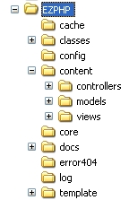

Folder Structure of EZPHP
.
When you open the EZPHP folder, you would see following folder structure:

- cache folder will contain the cached files if cache is turned on.
- classes folder contains the useful classes/libraries you may use in your application.
- config folder contains the site configuration files.
- content folder will contain the model, view and controller files of your application.
- core folder contains the core EZPHP framework files.
- docs folder contains the EZPHP documentation files.
- error404 folder contains the 404 error files.
- log folder will contain application log information.
- template folder contains the layout structure files of the site.
In order to develop an application using EZPHP, we are basically (or mostly) interested in three obvious folders inside the content folder and the template folder:
- models → contains your model (data) files.
- views → contains your view files.
- controllers → contains your controller files.
- template → contains your template file, CSS, JS, Images, etc.
So if you want to create a new page, let us say Contact Us, you must create two files; one view (html/template) file going into views folder and other one controller (main logic) file going into controller folder. Optionally, you could create third model file and place it in the models folder if you think your Contact Us page will interact with the database.
For every new page, you must create at least two files; one controller file and other one view file.
You could also create third optional model file if you think the page you created will interact with the
database.
.
.
.
EZPHP © 2010. All Rights Reserved.